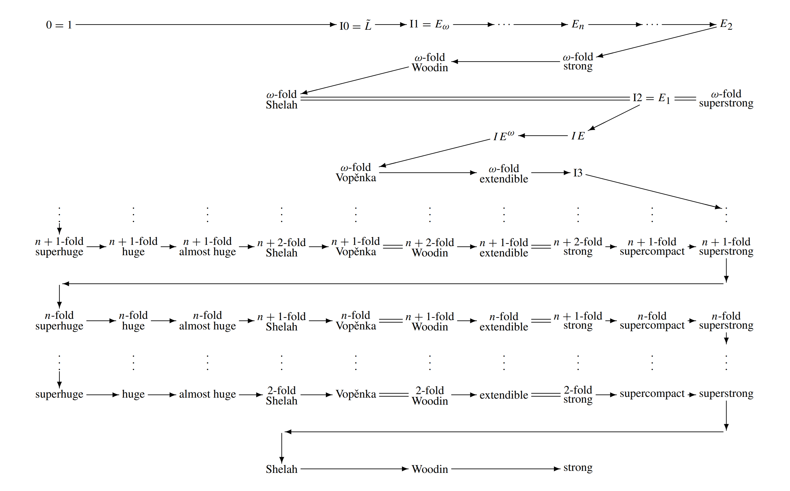

Climb into Cantor’s Attic, where you will find infinities large and small. We aim to provide a comprehensive resource of information about all notions of mathematical infinity.
View the Project on GitHub neugierde/cantors-attic
Quick navigation
The upper attic
The middle attic
The lower attic
The parlour
The playroom
The library
The cellar
Sources
Cantor's Attic (original site)
Joel David Hamkins blog post about the Attic
Latest working snapshot at the wayback machine
This page is a WIP. The $n$-fold variants of large cardinal axioms were created by Sato Kentaro in (Kentaro, 2007) in order to study and investigate the double helix phenomena. The double helix phenomena is the strange pattern in consistency strength between such cardinals, which can be seen below.

This diagram was created by Kentaro. The arrows denote consistency strength, and the double lines denote equivalency. The large cardinals in this diagram will be detailed on this page (unless found elsewhere on this website).
This page will only use facts from (Kentaro, 2007) unless otherwise stated.
The $n$-fold variants of large cardinals were given in a very large paper by Sato Kentaro. Most of the definitions involve giving large closure properties to the $M$ used in the original large cardinal in an elementary embedding $j:V\rightarrow M$. They are very large, but rank-into-rank cardinals are stronger than most $n$-fold variants of large cardinals.
Generally, the $n$-fold variant of a large cardinal axiom is the similar to the generalization of superstrong cardinals to $n$-superstrong cardinals, huge cardinals to $n$-huge cardinals, etc. More specifically, if the definition of the original axiom is that $j:V\prec M$ has critical point $\kappa$ and $M$ has some closure property which uses $\kappa$, then the definition of the $n$-fold variant of the axiom is that $M$ has that closure property on $j^n{\kappa}$.
There were many $n$-fold variants which were simply different names of the original large cardinal. This was due to the fact that some n-fold variants, if only named n-variants instead, would be confusing to the reader (for example the $n$-fold extendibles rather than the $n$-extendibles). Here are a list of such cardinals:
A cardinal $\kappa$ is $n$-fold $\lambda$-supercompact iff it is the critical point of some nontrivial elementary embedding $j:V\rightarrow M$ such that $\lambda<j(\kappa)$ and $M^{j^{n-1}(\lambda)}\subset M$ (i.e. $M$ is closed under all of its sequences of length $j^{n-1}(\lambda)$). This definition is very similar to that of the $n$-huge cardinals.
A cardinal $\kappa$ is $n$-fold supercompact iff it is $n$-fold $\lambda$-supercompact for every $\lambda$. Consistency-wise, the $n$-fold supercompact cardinals are stronger than the $n$-superstrong cardinals and weaker than the $(n+1)$-fold strong cardinals. In fact, if an $n$-fold supercompact cardinal exists, then it is consistent for there to be a proper class of $n$-superstrong cardinals.
It is clear that the $n+1$-fold $0$-supercompact cardinals are precisely the $n$-huge cardinals. The $1$-fold supercompact cardinals are precisely the supercompact cardinals. The $0$-fold supercompact cardinals are precisely the measurable cardinals.
A cardinal $\kappa$ is $n$-fold $\lambda$-strong iff it is the critical point of some nontrivial elementary embedding $j:V\rightarrow M$ such that $\kappa+\lambda<j(\kappa)$ and $V_{j^{n-1}(\kappa+\lambda)}\subset M$.
A cardinal $\kappa$ is $n$-fold strong iff it is $n$-fold $\lambda$-strong for every $\lambda$. Consistency-wise, the $(n+1)$-fold strong cardinals are stronger than the $n$-fold supercompact cardinals, equivalent to the $n$-fold extendible cardinals, and weaker than the $(n+1)$-fold Woodin cardinals. More specifically, in the rank of an (n+1)-fold Woodin cardinal there is an $(n+1)$-fold strong cardinal.
It is clear that the $(n+1)$-fold $0$-strong cardinals are precisely the $n$-superstrong cardinals. The $1$-fold strong cardinals are precisely the strong cardinals. The $0$-fold strong cardinals are precisely the measurable cardinals.
For ordinal $η$, class $F$, positive natural $n$ and $κ+η<κ_1<···<κ_n$:
$n$-fold extendible cardinals are precisely $n+1$ strong cardinals.
$n$-fold $1$-extendibility is implied by $(n+1)$-fold $1$-strongness and implies $n$-fold superstrongness.
A cardinal $\kappa$ is $n$-fold Woodin iff for every function $f:\kappa\rightarrow\kappa$ there is some ordinal $\alpha<\kappa$ such that $\{f(\beta):\beta<\alpha\}\subseteq\alpha$ and $V_{j^{n}(f)(j^{n-1}(\alpha))}\subset M$. Consistency-wise, the $(n+1)$-fold Woodin cardinals are stronger than the $(n+1)$-fold strong cardinals, and weaker than the $(n+1)$-fold Shelah cardinals. Specifically, in the rank of an $(n+1)$-fold Shelah cardinal there is an $(n+1)$-fold Woodin cardinal, and every $(n+1)$-fold Shelah cardinal is also an $(n+1)$-fold Woodin cardinal.
The $2$-fold Woodin cardinals are precisely the Vopěnka cardinals (therefore precisely the Woodin for supercompactness cardinals). In fact, the $n+1$-fold Woodin cardinals are precisely the $n$-fold Vopěnka cardinals. The $1$-fold Woodin cardinals are precisely the Woodin cardinals.
(More to be added)
The $\omega$-fold variant is a very strong version of the $n$-fold variant, to the point where they even beat some of the rank-into-rank axioms in consistency strength. Interestingly, they follow a somewhat backwards pattern of consistency strength relative to the original double helix. For example, $n$-fold strong is much weaker than $n$-fold Vopěnka (the jump is similar to the jump between a strong cardinal and a Vopěnka cardinal), but $\omega$-fold strong is much, much stronger than $\omega$-fold Vopěnka.
For ordinal $η$ and class $F$:
Results:
Definition:
Results:
A cardinal $\kappa$ is $\omega$-fold Woodin iff for every function $f:\kappa\rightarrow\kappa$ there is some ordinal $\alpha<\kappa$ such that $\{f(\beta):\beta<\alpha\}\subseteq\alpha$ and $V_{j^{\omega}(f)(\alpha))}\subset M$.
Consistency-wise, the existence of an $\omega$-fold Woodin cardinal is stronger than the I2 axiom, but weaker than the existence of an $\omega$-fold strong cardinal. In particular, if there is an $\omega$-fold strong cardinal $\kappa$ then $\kappa$ is $\omega$-fold Woodin and has $\kappa$-many $\omega$-fold Woodin cardinals below it, and $V_\kappa$ satisfies the existence of a proper class of $\omega$-fold Woodin cardinals.
A cardinal $\kappa$ is $\omega$-fold $\lambda$-strong iff it is the critical point of some nontrivial elementary embedding $j:V\rightarrow M$ such that $\kappa+\lambda<j(\kappa)$ and $V_{j^\omega(\kappa+\lambda)}\subset M$.
$\kappa$ is $\omega$-fold strong iff it is $\omega$-fold $\lambda$-strong for every $\lambda$.
Consistency-wise, the existence of an $\omega$-fold strong cardinal is stronger than the existence of an $\omega$-fold Woodin cardinal and weaker than the assertion that there is a $\Sigma_4^1$-elementary embedding $j:V_\lambda\prec V_\lambda$ with an uncountable critical point $\kappa<\lambda$ (this is a weakening of the I1 axiom known as $E_2$). In particular, if there is a cardinal $\kappa$ which is the critical point of some elementary embedding witnessing the $E_2$ axiom, then there is a nonprincipal $\kappa$-complete ultrafilter over $\kappa$ which contains the set of all cardinals which are $\omega$-fold strong in $V_\kappa$ and therefore $V_\kappa$ satisfies the existence of a proper class of $\omega$-fold strong cardinals.